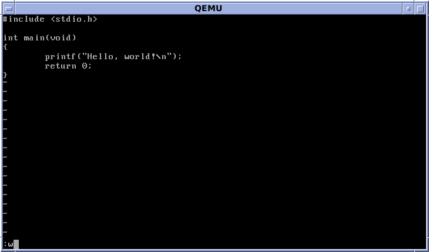

Where does vim come from?
Ed
Ed is a terminal (non-visual) text editor developed in 1969. Non-visual means that text must be typed on the terminal, without viewing the entire file. It was necessary to type certain commands to see what was typed into the file. Ed is still used today in all Unix systems, and is used whenever there is a problem.

Ex / Vi
Ex is the version of Ed's visual interface that was developed in 1976. Ed was really adapted to the computers of the 60's and early 70's because they had a low memory and the CRTs were not optimal at that time. So when the technology adapted, people opted for a more visual alternative. The ex was then renamed vi (two letters of "visual").

Vim
Vim (Vi-IMproved) was published in 1991. It is an improved version of Vi, containing colors, more customization, completion and merging. It also supports plugins and mouse interaction. So it is still possible to use Vi's commands, by switching to vi mode. Vim has been voted the most popular text editor by Linux Journal readers, and the 5th most popular development environment in 2019.